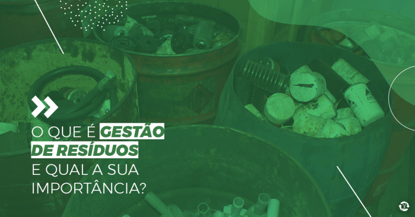
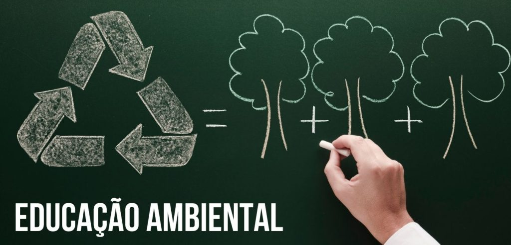
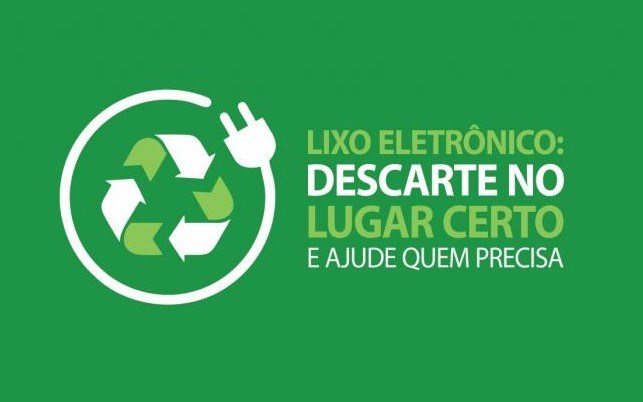

O gerenciamento de resíduos pode ser entendido como uma série de ações que envolvem as etapas de coleta, transporte, transbordo, tratamento, destinação e disposição final ambientalmente adequadas.
A gestão de resíduos envolve o mapeamento dos processos de uma empresa, a análise dos resíduos gerados por cada processo, como também a classificação e quantificação dos mesmos, o armazenamento e identificação, e então a destinação.
Além disso, uma gestão eficiente precisa garantir ao máximo o reaproveitamento e reciclagem, bem como reduzir a produção dos rejeitos – que são os materiais que não apresentam viabilidade técnica e econômica para serem reciclados.
O que é educação ambiental:
Educação ambiental é uma área do ensino voltada para a conscientização dos indivíduos sobre os problemas ambientais e como ajudar a combatê-los, conservando as reservas naturais e não poluindo o meio ambiente.
Esse tipo de educação representa um processo empregado para preservar o patrimônio ambiental e criar modelos de desenvolvimento, com soluções limpas e sustentáveis. Não apenas do ponto de vista ecológico, mas também a partir de aspectos políticos, econômicos, sociais, éticos, entre outros.


leis para descarte
Na verdade, o descarte inadequado de lixo é proibido no Brasil desde 1954, pela Lei 2.312 de 3 de setembro, pelo Código Nacional da Saúde. Essa proibição foi reforçada em 1981 pela Política Nacional de Meio Ambiente, e recentemente, 2010, pela Política Nacional dos Resíduos Sólidos.
Pontos de Coleta são locais apropiados para o recebimento de descartes como: eletroeletrônicos, lâmpada, medicamentos, óleo de cozinha, pilhas e baterias, pneus, Tv Analógica, chapa de Raio-X e vidro que serão recolhidos e levados para o seu reaproveitamento. Os pontos foram mapeados afrente conforme o tipo de resíduo.